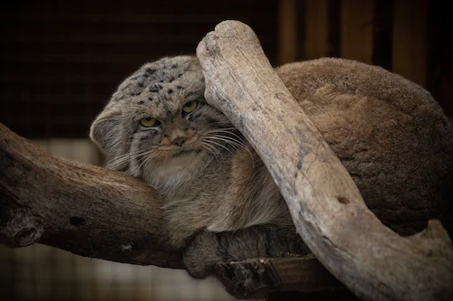
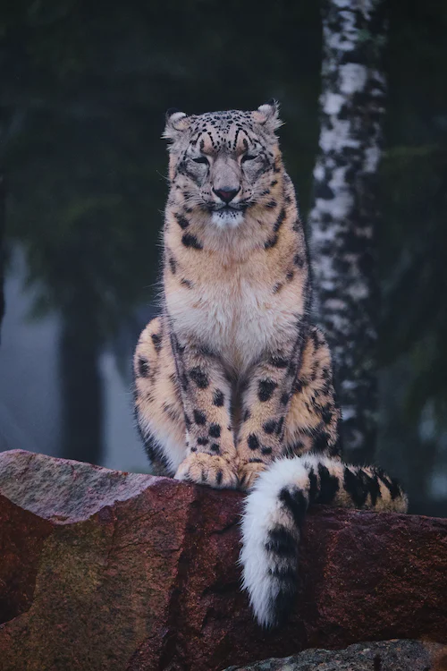
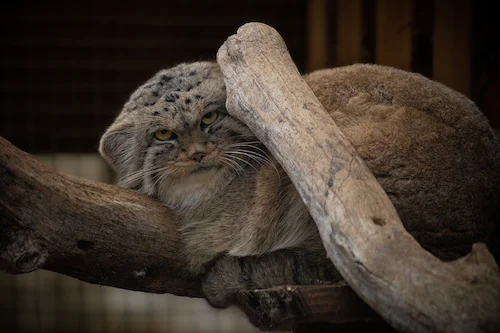
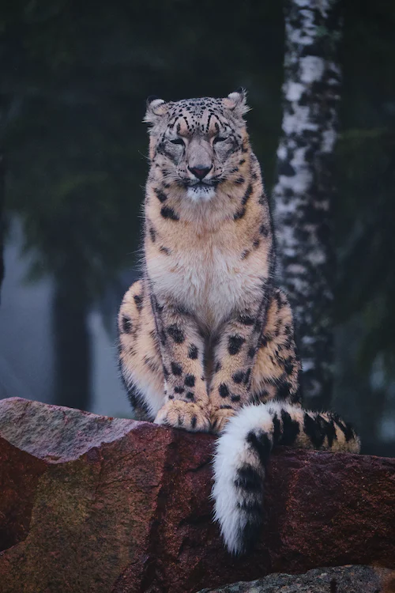

Территорию Алтайского края заселили более четырехсот видов животных и птиц. Четверть из них млекопитающие. Пернатых в регионе еще больше, 320 видов. Кроме того, 7 видов пресмыкающихся, 6 видов беспозвоночных животных и 7 видов земноводных. А в многочисленных реках и озерах водится аж 35 видов рыб.
Среди кошек есть крупные звери – лев, тигр; есть небольшие, размером приближающиеся к той же домашней кошке.
Есть средние – леопард, барс, рысь. Совсем мелких среди них нет. Все они – наземные обитатели.
Живут в степях, пустынях, лесах, горах. Некоторые хорошо лазят по деревьям, там и отдыхают; другие «дружат»
с водой, любят поплавать, но все-таки все они большую часть жизни проводят на земле.
Представители:
Сильные лапы этого красивого животного имеют межпальцевые перепонки. Потому рысь легко передвигается даже по большим снежным сугробам. В алтайский горах хищник питается копытными и мелкими млекопитающими. Активны они, как правило, в сумерках и ночью. Детеныши рыси почти весь первый год не отходят от мамы. Мех рыси очень ценный, имеет весьма привлекательный внешний вид и сохраняет тепло. Потому на это животное охотятся ни одно десятилетие.
 


